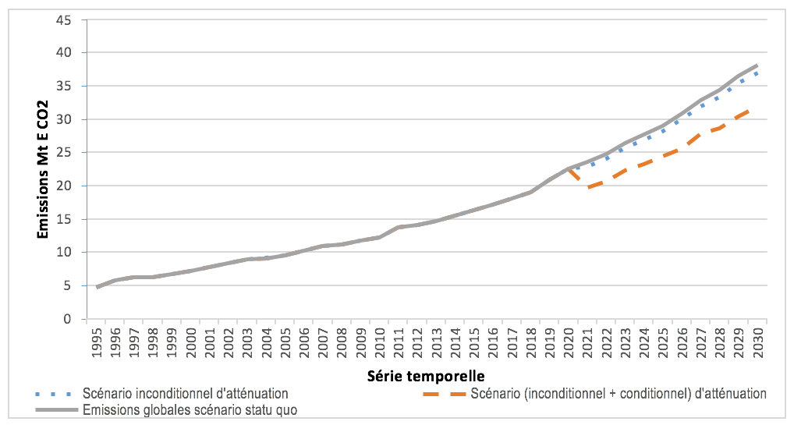

En application du paragraphe 13 de la décision 1/CP.20 relatif à l’appel de Lima de décembre 2014, qui a réitéré l’invitation adressée aux Parties de faire part de leurs Contributions Prévues Déterminées au niveau National (CPDN) en prélude à la vingt et unième session de la Conférence des Parties (COP21), le Bénin a soumis, au Secrétariat de la Convention-Cadre des Nations Unies sur les Changements Climatiques (CCNUCC) en septembre 2015, sa CPDN. Ce document pouvait tenir lieu de sa première Contribution Déterminée au niveau National (CDN) s’il n’avait pas exercé, lors du dépôt de son instrument de ratification de l’Accord de Paris, le 31 octobre 2016, l’option d’élaborer sa CDN par l’actualisation de sa CPDN, comme le prévoit le paragraphe 22 de la décision 1/CP.21 adoptant l’Accord de Paris. Ainsi le présent document qui est le fruit d’un travail plus approfondi ayant bénéficié d’une large participation des différentes parties prenantes provenant aussi bien des structures publiques, privées que des ONGs et des collectivités locales constitue la première CDN du Bénin.
Située en Afrique de l’Ouest dans le Golfe de Guinée, entre les latitudes 6°30’ et 12°30’N et les longitudes 1° et 3°40’E, la République du Bénincouvre une superficie de 114 763 km2. Avec un taux moyen annuel de croissance démographique égal à 3,5 %, sa population est estimée à environ 10.653.654 habitants pour l’année 2016. Deux types de climat régissent le pays à savoir : le climat subéquatorial dans la région méridionale et le climat tropical continental dans la région septentrionale.Du point de vue économique, le Bénin est un Pays Moins Avancé (PMA) dont l’économie repose surtout sur l’agriculture. En dépit des efforts consentis sur le plan économique, le taux moyen de croissance réelle (4,2 % de 2006 à 2015) est inférieur au taux de croissance de 7 %, minimum nécessaire pour lutter durablement contre la pauvreté.
La prise de conscience des enjeux liés à la problématique des changements climatiques a favorisé l’élaboration et l’adoption de plusieurs politiques, stratégies et progammes de riposte par le Bénin dont l’Agenda 21 national, la stratégie nationale de développement durable, la stratégie de développement à faible intensité de carbone et résilient aux changements climatiques, la stratégie nationale de renforcement des ressources humaines, de l’apprentissage et du développement des compétences pour favoriser un développement vert, faible en émissions et résilient aux changements climatiques et le Programme d’Action National aux fins de l’Adaptation aux changements climatiques (PANA). La volonté politique du Gouvernement béninois à lutter contre la problématique des changements climatiques trouve sa place dans son Programme d’Actions 2016-2021 (PAG) qui se fonde sur l’Agenda 2030 sur le développement durable et sur les décisions de l’Accord de Paris. Les changements climatiques constituent donc une préoccupation du Gouvernement béninois qui développe des actions sur la base d’objectifs et d’orientations clairement définis à travers les structures étatiques, les collectivités locales, le secteur privé et les organisations de la société civile.
Les émissions totales des GES du Bénin s’établissent à environ 14,1 Méga tonne Equivalent-CO2 (Mt ECO2), soit environ 1,5 tonne E CO2 par habitant en 2012, secteur Utilisation des Terres, Changements d’Affectation des Terres et Foresterie (UTCATF) exclu. Ces émissions proviennent des secteurs de l’énergie (47,4 %), de l’agriculture (45,9%), des déchets (5,0 %) et des procédés industriels (1,6 %). Tenant compte du secteur UTCATF, le bilan des émissions (14,9 Mt E-CO2) et des absorptions (50,3 Mt CO2) de GES montre que le Bénin reste globalement un puits de GES avec une capacité d’absorption nette de 35,4 Mt CO2 en 2012. Cependant sa capacité de séquestration du carbone, voire d’absorption du CO2, au niveau de son couvert végétal est en régression (20,6% entre 1995 et 2005 contre 32,0% en 2012).
En matière de projection, dans le contexte du scenario du statu quo (sans intervention), la tendance des émissions globales (hors UTCATF) révèle un taux d’accroissement de 172,8 % sur la période 2012-2030 en évoluant de 14,1 Mt E-CO2 à 38,5 Mt E-CO2.Le total des émissions globales cumulées de GES pour ce scénario sur la période 2021-2030 avoisine 306,1 Mt E-CO2. Elles proviendraient à 66,3 % du secteur de l’énergie et à 27,4 % de celui de l’agriculture.
Le Bénin prévoit de réduire globalement les émissions cumulées de gaz à effet de serre (hors secteur foresterie) par rapport au scénario de maintien du statu quo d’environ 49,49 Mt E-CO2, soit une réduction de 16,17% sur la période 2021 à 2030. La part des efforts nationaux est de l’ordre de 3,63% et celle de la contribution conditionnelle est de 12,55%. La mise en œuvre de ces mesures contribuerait à réduire les émissions cumulées de gaz à effet de serre dans le secteur de l’énergie par rapport au scénario de maintien du statu quo de 23,35 Mt E CO2 sur la période de 2021 à 2030, soit 11,51% dont 9,53 % de contribution conditionnelle et 1,98% de contribution inconditionnelle. Les efforts de réduction au niveau du secteur de l’agriculture permettraient d’éviter les émissions cumulées de GES à hauteur d’environ 26,1Mt E CO2 par rapport au scénario de maintien du statu quo, soit une réduction de 31,1% sur la période de 2021 à 2030, dont 25,3 % de contribution conditionnelle et 5,8 % de contribution inconditionnelle.
Dans le secteur de l’UTCATF, la mise en œuvre des mesures pourrait contribuer à accroître la capacité de séquestration cumulée du Bénin à hauteur de 32 Mt E-CO2 par rapport au scénario de maintien du statu quo dans ce secteur sur la période 2021-2030 dont 76,6 % de contribution conditionnelle et 23,4 % de contribution inconditionnelle, à travers la limitation de la déforestation (23,9 Mt E-CO2) et la création des plantations forestières (8,1 Mt E CO2).
Sur la base des stratégies, plans et programmes existants, les objectifs sectoriels clés et les mesures en matière d’atténuation aux changements climatiques consignés dans les tableaux 3 à 5.
La mise en œuvre des activités sectorielles d’atténuation (agriculture, énergie et foresterie) au titre de la CDN s’appuiera sur les stratégies, programmes et projets existants et les programmes et projets futurs.
Au regard de son appartenance aux groupes des Pays les Moins Avancés (PMA), de son contexte environnemental et de ses objectifs de développement, l’adaptation demeure pour la République du Bénin la priorité en matière de réponse aux changements climatiques quoiqu’elle adhère inconditionnellement à l’effort mondial, orienté vers la stratégie d’atténuation.
En termes de vulnérabilité actuelle, les risques climatiques majeurs qui impactent les modes et moyens d’existence au niveau des secteurs de l’agriculture, des ressources en eau, du littoral et de la foresterie sont : la sécheresse, les inondations, les pluies tardives et violentes, les vents violents, la chaleur excessive et l’élévation du niveau de la mer. Les manifestations de ces risques climatiques ont engendré au cours des trois dernières décennies de nombreux impacts, en l’occurrence la baisse des rendements agricoles, la perturbation des calendriers agricoles, la baisse des niveaux d’eau dans les barrages d’approvisionnement en eau potable, la prolongation de la période d’étiage, la submersion des berges, etc.
S’agissant de la vulnérabilité future, les risques climatiques auxquels pourraient s’exposer les systèmes naturels et humains s’inscrivent dans un scenario de persistance ou d’accentuation des risques actuellement observés et sont fonction du secteur considéré. Les impacts potentiels, selon les projections climatiques aux horizons temporels 2025, 2050 et 2100 vont des inondations côtières et intrusions d’eaux salines dans les cours et nappes d’eau à une baisse des rendements du maïs dans certaines zones agro-écologiques (ZAE5 notamment) en passant par un décalage des périodes de crue dans la portion béninoise du bassin du Niger.
Sur la base des stratégies, plans et programmes existants, les objectifs sectoriels clés en matière d’adaptation aux changements climatiques sont définis pour les horizons temporels 2020, 2025,2030 et consignés dans le tableau 7.
La mise en œuvre des activités sectorielles d’adaptation (agriculture, ressources en eau, littoral et foresterie) au titre de la CDN s’appuiera sur les stratégies, programmes et projets existants et les programmes et projets futurs.
La CDN du Bénin sera mise en œuvre sous l’égide du Ministère en charge de l’environnement qui assure le rôle de Point Focal National de la Convention Cadre des Nations Unies sur les Changements Climatiques avec la participation effective de toutes les parties prenantes, notamment les Partenaires Techniques et Financiers, les acteurs étatiques et non étatiques avec une prise en compte du genre et de l’inclusion sociale (Ministères sectoriels, collectivités locales, secteur privé, société civile, etc.). L’implication des parties prenantes sera assurée à travers certains organes notamment (i) le Comité de Pilotage de la CDN qui est l’instance suprême en matière de décision et d’orientation, (ii) la Coordination Nationale de la CDN qui est l’instance fédératrice de toutes les actions et (iii) les équipes sectorielles de mise en œuvre relevant des ministères couverts par les mesures retenues dans la CDN. La mise en œuvre des projets et programmes identifiés au niveau des différents secteurs couverts par la CDN relève de la responsabilité des ministères sectoriels concernés. Les orientations et les facilités nécessaires seront données par le Ministère en charge de l’environnement pour appuyer au besoin les ministères sectoriels dans la préparation des dossiers de recherche de financement au niveau des mécanismes mis en place pour aider les PMA. Le ministère en charge de l’environnement assurera également la responsabilité du suivi évaluation de la mise en œuvre de la CDN en collaboration avec les ministères sectoriels ainsi que celle de la mise en œuvre des renforcements des capacités institutionnelles.
Les activités prévues dans le cadre de la mise en œuvre de la CDN du Bénin requièrent des moyens financiers, technologiques et de renforcement des capacités.
En ce qui concerne les ressources technologiques, l’accent sera mis sur les technologies endogènes et le transfert Sud-Sud et Nord-Sud y compris le savoir-faire nécessaire. Les principaux besoins en transferts de technologies identifiés concernent les secteurs de l’agriculture/foresterie, de l’énergie (tableau 10).
Le renforcement des capacités consistera au développement des compétences techniques et de l’amélioration des capacités institutionnelles.
La République du Bénin, pour réaliser ses ambitions d’atténuation des Gaz à Effet de Serre (GES), aura besoin d’une enveloppe financière globale de l’ordre de 6042,33 millions dollars US dont 2135,24 millions comme contribution du Gouvernement béninois et 3907,09 millions à mobiliser auprès des Partenaires Techniques et Financiers (PTF) sur la période allant de 2021 à 2030. Le coût afférent à la mise en œuvre des programmes et projets d’adaptation est estimé à environ 5594,69 millions de dollar US dont la contribution nationale (part inconditionnelle) est de l’ordre de 1441,15 millions de dollar US tandis que la part conditionnelle (appui international) correspond à 4153,54 millions de dollar US.
Au total, les ressources financières à mobiliser pour la mise en œuvre des mesures d’atténuation et d’adaptation au titre de cette première CDN du Bénin s’élève globalement à environ 11637,02 millions de dollar US devant provenir de fonds publics, du secteur privé et d’appui international.
La mise en œuvre de la CDN avec succès pourrait être confrontée à de nombreuses contraintes au nombre desquelles il faut noter : l’expertise technique limitée, l’insuffisance de la qualité des données et informations, la mobilisation effective et à temps des ressources nationales et extérieures, la capacité des structures publiques concernées à gérer efficacement des programmes de grandes envergures, l’effectivité de l’application des textes réglementaires, le transfert effectif de technologies tout comme l’aboutissement des travaux de recherche – développement au plan national.
La République du Bénin est située en Afrique Occidentale dans le Golfe de Guinée, entre les latitudes 6°30’ et 12°30’N et les longitudes 1° et 3°40’E. Elle couvre une superficie de 114 763 km2. Avec un taux moyen annuel de croissance démographique de 3,5 %, sa population est estimée à environ 10 882 953habitants en 2016 (INSAE, 2015 ).
Deux types de climat régissent le pays à savoir : le climat subéquatorial dans le Sud et le climat tropical continental dans le Nord. A l’échelle de l’année, les précipitations moyennes varient entre 700 mm au Nord et 1500 mm au Sud, tandis que les températures de l’air varient en moyenne autour de 27,2 °C, avec des maxima absolus pouvant dépasser 45°C au Nord (ASECNA, 2016).
Le Bénin fait partie des Pays les Moins Avancés (PMA) dont l’économie repose surtout sur l’agriculture, le commerce et le transport avec les pays voisins. En dépit des efforts consentis sur le plan économique, le taux moyen decroissance réelle (4,2% de 2006 à 2015) est inférieur au taux de croissance de 7 %, minimum nécessaire pour lutter durablement contre la pauvreté (PAG 2016-2021). Ce qui appelle de nombreux défis à relever dans le cadre des diverses stratégies de réduction de la pauvreté (Ndoye et al., 2016).
Des facteurs exogènes dont les changements climatiques sont susceptibles d’entraver la réussite de la mise en œuvre des mesures prises ou envisagées pour lutter durablement contre la pauvreté au plan national. En effet, à l’instar des autres PMA, le Bénin reste un pays particulièrement vulnérable à la variabilité et aux changements climatiques dont les conséquences se font ressentir aux plans national et local.Depuis deux décennies environ, les régimes pluviométriques caractérisant les climats du Bénin connaissent des fluctuations parfois très marquées au milieu ou à l’intérieurdes saisons. Les principaux risques auxquels le pays est confronté sont la sécheresse, les inondations et les pluies tardives et violentes. A ces risques majeurs s’ajoute l’occurrence de risques climatiques ayant une faible emprise géographique, telle que l’élévation du niveau de la mer, mais capable de grands impacts économiques et sociaux.
La prise de conscience des enjeux liés à la problématique des changements climatiques a favorisél’élaboration et l’adoption de plusieurs politiques, stratégieset progammes de riposte par le Bénin dont l’Agenda 21 national, la stratégie nationale de développement durable,lastratégie de développement à faible intensité de carbone et résilient aux changements climatiques, la stratégie nationale de renforcement des ressources humaines, de l’apprentissage et du développement des compétences pour favoriser un développement vert, faible en émissions et résilient aux changements climatiques et le Programme d’Action National aux fins de l’Adaptation aux changements climatiques (PANA). Ces documentsvisent dans l’ensemble à (i) intégrer des considérations climatiques dans les plans opérationnels sectoriels stratégiques du Bénin, afin qu’ils soient à plus faible intensité en carbone et plus résilients aux changements climatiques pour son développement durable et (ii)doter le Bénin d'une base de ressources humaines durable pour faire face aux changements climatiques. D’autres initiatives sont en cours notamement l’élaboration du plan national d’adaptation et de la politique nationale en matière de lutte contre les changements climatiques.
La volonté politique du Gouvernement béninois à relever les défis des changements climatiquesest traduite dans son Programme d’Actions 2016-2021 (PAG). Ce programme se fonde notammentsur l’Agenda 2030 sur le développement durable et les décisions de l’Accord de Paris. Il prévoit des actions et réformes pour «relancer de manière durable le développement économique et social du Bénin » dont l’élaboration et la mise en place de mesures d’adaptation, d’atténuation et de gestion des catastrophes à travers la poursuite de la mise en œuvre duPANA, le soutien au développement des énergies renouvelables, des initiatives de protection des forêts, de reboisement et de verdissement au niveau communal, la lutte contre l’érosion côtière, une stratégie pour l’agriculture intelligente face au climat, la promotion d’une gestion rationnelle et durable des ressources naturelles et forestières, etc.
L’urgence de la problématique des changements climatiques nécessite une approche globale de riposte portée notamment par le Ministère du Cadre de Vie et de Développement Durable (MCVDD) .Les principales structures impliquées dans la lutte contre les changements climatiques au sein de ce ministèresontla Direction Générale de l’Environnement et du Climat (DGEC), le Fonds National pour l’Environnement et le Climat (FNEC) et l’Agence Béninoise pour l’Environnement et le Climat (ABEC). La DGEC a pour mission d’élaborer et d’assurer la mise en œuvre ainsi que le suivi-évaluation de la politique et des stratégies de l’Etat en matière de gestion des effets des changements climatiques et de promotion de l’économie verte.Les questions liées aux changements climatiques sont gérées par le MCVDD en partenariat avec les autres ministères sectoriels, les collectivités locales, le secteur privé et les organisations de la société civile avec l’appui des Partenaires Techniques et Financiers. Ces structures sont impliquées individuellement ou collectivement à travers des comités notamment le Comité National sur les Changements Climatiques (CNCC), laCommission de Modélisation Economique des Impacts du Climat et de l’Intégration des Changements Climatiques dans le Budget Général de l’Etat (CMEICB), le système national d’inventaire des GES, etc. La mise en place du système de mesure, de notification et de vérification au niveau national est en cours à travers le Projet d’Elaboration du Premier Rapport Biennal Actualisé.
Les données sur les émissions des gaz à effet de serre (GES) sont basées sur les résultats disponibles en juin 2017 des études d’inventaire des GES réalisées dans le cadre du projet d’élaboration de la Troisième Communication Nationale (TCN).
Les émissions totales des GES du Bénin s’établissent à environ 14,1 Méga tonne Equivalent-CO2 (Mt E-CO2), soit environ 1,5 tonne E-CO2 par habitant en 2012, secteur Utilisation des Terres, Changements d’Affectation des Terres et Foresterie (UTCATF) exclu. Ces émissions proviennent des secteurs de l’énergie (47,4%), de l’agriculture (45,9 %), des déchets (5,0%) et des procédés industriels (1,6 %).
En tenant compte du secteur UTCATF, le bilan des émissions (14,9 Mt E-CO2) et des absorptions (50,3 Mt CO2) de GES montre que le Bénin est globalement un puits de GES avec une capacité d’absorption nette de 35,4 Mt CO2 en 2012, c’est-à-dire que ses émissions de GES sont largement compensées par l’absorption du CO2 au niveau de son couvert forestier. Quoique le Bénin demeure un puits, sa capacité de séquestration du carbone est en régression, passant de (52,0) Mt E-CO2 en 1995 à (41,3) Mt E-CO2 en 2005, soit une diminution de 20,6 %, et à (35,4) Mt E-CO2 en 2012, soit une diminution de 32,0 %.
En cas de maintien du statu quo, la tendance des émissions globales (hors UTCATF) révèle un taux d’accroissement de 172,8% sur la période 2012-2030 en évoluant de 14,1 Mt E-CO2 à 38,5 Mt E-CO2 (Figure 1). Le total des émissions globales cumulées de GES sans aucune intervention sur la période 2021-2030 avoisine 306,1 Mt E-CO2 (secteur UTCATF exclu). Elles proviendraient à 66,3% du secteur de l’énergie et à 27,4% de celui de l’agriculture.
Figure 1:Tendance des émissions globales et des émissions dans les secteurs de l’agriculture et de l’énergie (1995- 2030) – scénario maintien du statu quo.
Tableau 1: Hypothèses et approches méthodologiques utilisées pour prévoir les émissions de GES en cas de maintien du statu quo
| Méthodologie pour la comptabilisation des émissions pour l’année 2012 (année de référence) | Les inventaires des GES de l’année 2012 ont été réalisés selon la version révisée 1996 des lignes directrices du Groupe d’Experts Intergouvernemental sur l’Evolution du Climat (GIEC), les recommandations du GIEC en matière de bonnes pratiques et de gestion des incertitudes pour les inventaires nationaux de GES (GPG 2000) et les Lignes directrices 2006 du GIEC pour les secteurs de l’énergie, de l’agriculture, des déchets et des procédés industriels. |
| Approche concernant les émissions relatives au secteur de l’UTCATF pour l’année de référence. | Les recommandations du GIEC en matière de bonnes pratiques pour le secteur de l’Utilisation des Terres, Changement d’Affectation et Foresterie (UTCATF) (GPG 2003), les lignes directrices 1996 du GIEC (GL 1996). |
| Méthodologie de projection des émissions du scénario de statu quo (sans aucune mesure de réduction des émissions) | Projection des émissions par secteur d’activité hors UTCAF (2013-2030) :
La méthodologie utilisée pour les projections des émissions à partir de 2013 lie le volume des émissions de GES d’un pays à trois facteurs que sont les données démographiques (Pop), les données du PIB par habitant (PIB/Pop) et de l’émission de GES par unité du PIB(GES/PIB) selon l’équation ci-après : Volume de GES = Pop x (PIB/Pop) x (GES/PIB) Les données de base utilisées sont les suivantes :
Les résultats obtenus ont été ajustés sur la période 2019 à 2030 pour tenir compte des émissions que générerait le programme de renforcement de la capacité interne de production thermique d’électricité estimées sur la base des GPG 2000 et des GL 1996. Projection des émissions globales (2013 à 2030): Les émissions globales sont évaluées à partir de la somme des émissions sectorielles hors secteur UTCATF. |
| Potentiels de réchauffement de la planète (PRG) | Valeurs des PRG fournies par le GIEC dans son quatrième rapport d’évaluation : 1 pour le CO2, 25 pour le CH4 et 298 pour le N2O. |
La République du Bénin fait partie des Pays les Moins Avancés (PMA) et des Pays ayant des zones côtières de faible élévation. Fort de cette considération, le Bénin dans sa soumission, présente une contribution à l’atténuation de GES fondée sur des mesures contenues dans des stratégies, programmes et projets pour la période 2017– 2030.Cette période inclut la phase préparatoire de mise en œuvre de la CDN (2017 à 2020) et la période de mise en œuvre de la CDN (2021 à 2030, période de comptabilisation des efforts de réduction des émissions des GES).De nombreuses opportunités d’atténuation des émissions de GES ont été identifiées dans les secteurs de l’agriculture, de l’énergie et de l’UTCATF à cet effet.
La contribution globale déterminée au niveau national à l’atténuation est présentée dans le tableau 2. Les mesures sectorielles prévues et leurs effets sont présentés dans les tableaux 3, 4 et 5 et illustrés par les figures 2, 3 et 4.
Tableau 2: Contribution globale déterminée au niveau national
| Période couverte | 2017- 2030 (2017-2020 : phase préparatoire de mise en œuvre de la CDN; 2021-2030: mise en œuvre de la CDN et comptabilisation des réductions d’émission des GES) |
| Année de référence | 2012 |
| Type de contribution | Contribution fondée sur des mesures contenues dans des stratégies, programmes et projets susceptibles de contribuer à la réduction des émissions des GES et basées aussi bien sur les ressources nationales (contribution inconditionnelle) que sur le soutien de la communauté internationale (contribution conditionnelle).
La contribution inconditionnelle englobe les fonds publics et les investissements privés. |
|
Champ d’application et portée |
|
| GES considérés dans la contribution | Dioxyde de carbone (CO2), méthane (CH4), oxyde nitreux (N2O) |
| Secteurs/sources couverts par la contribution | -Energie (sources : secteur résidentiel et industries énergétiques)
-Agriculture (sols agricoles, rizières, brûlage des résidus agricoles, brûlage dirigé des savanes). -UTCATF (terres forestières incluant les forêts naturelles et les plantations). |
| Couverture géographique | Tout le territoire national. |
| Réduction globale escomptée; des émissions (ensemble des secteurs ciblés) par rapport au scénario de maintien du statu quo | Les mesures envisagées dans les secteurs Energie et Agriculture sont susceptibles de contribuer à réduire les émissions cumulées de GES (hors UTCATF) d’environ 49,49 Mt E CO2 par rapport au scénario de maintien du statu quo, soit une réduction de 16,17 % sur la période 2021-2030 (figure 2) dont 12,55% de contribution conditionnelle et 3,62% de contribution inconditionnelle.
La mise en œuvre des mesures prévues dans le secteur de l’UTCATF contribuerait à accroître sa capacité de séquestration cumulée de 32 Mt E CO2 sur la période 2021-2030 dont 76,6% de contribution conditionnelle, à travers la limitation de la déforestation (23,9 Mt E CO2) et la création des plantations forestières (8,1 Mt E CO2). La réduction du taux annuel de déforestation permettrait de réduire les émissions cumulées dues au secteur de la foresterie de 110 Mt E-CO2 sur la période 2021-2030 dont 80% de contribution conditionnelle et 20% de contribution inconditionnelle. |

Figure 2: Estimation des émissions globales des GES en cas du scénario de statu quo et en cas d’intervention
Tableau 3: Mesures envisagées et émissions évitées dans le secteur de l’agriculture
| Objectifs sous-sectoriels | Mesures envisagées | Contribution inconditionnelle | Contribution
conditionnelle (additionnelle) |
| Promouvoir les techniques culturales améliorées dans le cadre de la production végétale. | (1) Mise en œuvre des techniques culturales améliorées sur une superficie de 500.000 ha/an. | 250 000 ha / an | 250 000 ha / an |
| Promouvoir les techniques de gestion de la fertilité des sols dans le cadre de la production végétale. | (2)Mise en œuvre des techniques de maintien de la fertilité des sols sur une superficie de 500.000 ha / an. | 100 000 ha / an | 400 000 ha / an |
|
Promouvoir les aménagements hydro- agricoles. |
(3) Aménagement de 96.500 ha de terres agricoles et construction de180 retenues d’eau. | 48.250 ha de terres agricoles aménagés et 90 retenues d’eau construites. | Un complément de 48.250 ha de terres agricoles aménagés et de 90retenues d’eau construites. |
| (4) Aménagement et irrigation de 52.000 ha de périmètres rizicoles avec maîtrise de l’eau. | 26.000 ha de périmètres rizicoles aménagés et irrigués avec maîtrise de l’eau. | Un complément de 26.000 ha de périmètres rizicoles aménagés et irrigués avec maîtrise de l’eau. | |
| Réduction des émissions pour le secteur de l’agriculture. |
Emissions évitées escomptées (Figure 3) :Les efforts d’amélioration des itinéraires techniques visant la limitation de la fermentation méthanique et des émanations d’oxyde nitreux dues à la nitrification/dénitrification dans les systèmes de culture permettraient d’éviter les émissions cumulées de ces gaz à hauteur d’environ 26,14 Mt E CO2 par rapport au scénario de maintien du statu quo, soit une réduction de 31,1 % d’ici 2030 dont 25,3% de contribution conditionnelle et 5,8 % de contribution inconditionnelle. Les émissions cumulées évitées se répartissent comme suit : (1) Promotion des techniques culturales améliorées 4,3 % dont 2,1 % de contribution conditionnelle ; (2) Promotion des techniques de gestion de la fertilité des sols 23,8 % dont 19,1 % de contribution conditionnelle ; (3) Promotion des aménagements hydro-agricoles 3,0 % dont 1,5 % de contribution conditionnelle. |
||

Figure 3: Estimation des émissions des GES en cas du scénario de statu quo et en cas d’intervention dans le secteur de l’agriculture.
Tableau 4: Mesures envisagées et émissions évitées dans le secteur de l’énergie
| Objectifs sous- sectoriels | Mesures envisagées | Contribution inconditionnelle | Contribution conditionnelle |
|
Développer la productiond’énergie électrique à partir du gaz naturel et les sources d’énergies renouvelables. |
(1) Mise en place à Maria Gléta de centrales thermiques bicombustibles (fioul, gaz naturel) de production d’électricité (au total 500 MW au moins à l’horizon 2030) | X | |
| (2) Construction d’un terminal flottant de regazéification du Gaz Naturel Liquéfiédans le port de Cotonou (puissance totale des centrales à alimenter : 500 MW). | X (60% del’investissement) | X (40% del’investissement). | |
| (3) Exploitation au gaz naturel de la capacité thermique de production installée. | X (3% de la capacité au gaz naturel et 97% au fioul si le projet de terminal deregazéification n’est pas réalisé.) | X (la totalité de la capacité si le projet de terminal de regazéification est réalisé) | |
| (4) Développer les énergies renouvelables (construction des centrales hydroélectriques de Adjarala 147 MW ; de Dogo bis 128 MW ; implantation de fermes solaire PV de capacité totale de 95 MWc, structuration d’une filièrebiomasse combustible 15 MW) : | X (60% del’investissement)
|
X (40% del’investissement) | |
| (5) Construction d’une troisième centralehydroélectrique (aménagement du site de Vossa, 60,2 MW) | X (60% del’investissement)
|
X (40 % del’investissement) | |
|
Etendre l’accès des ménages à l’éclairage électrique en remplacement de l’éclairage au kérosène. |
(6) Electrification des localités par raccordement au réseau (au total 600 localités entre 2021 et 2030). | X (Electrification de 300 localités) | X (Electrification de 300 localités additionnelles) |
| (7) Promotion de l’accès de 424.000 ménages utilisant du kérosène pour l’éclairage à l’électricité dans les localités qui seront raccordées aux réseaux de la SociétéBéninoise d’Energie Electrique (SBEE) | Acquisition de 212.000 kits de branchement des ménages
|
Acquisition de 212.000 kits additionnels de branchement des ménages | |
| Renforcer les actions de consommations efficaces d’énergie électrique dans tous les secteurs. | (8)Poursuivre les actions d’efficacité énergétique dans tous les secteurs : industries, tertiaire, et ménages (mise en place de normes, centrales solaires PV sur les toits des bâtiments administratifs, promotion de l’utilisation des équipements électriques à basse consommation d’énergie, promotion de l’éclairage public solairePV etc.) | X | |
| Promouvoir les technologies basses consommatrices de bois-énergie | (9) Promotion de l’utilisation économique debois-énergie par l’accès de 140.000 nouveaux ménages aux foyers améliorés. | 46.000 ménages | 94.000 ménages |
| (10) Appui à l’organisation et au développement du marché de foyers améliorés performants | X | ||
| (11) Mise en place de réglementation et de mesures pour la promotion d’un marché de climatiseurs et réfrigérateurs bassesconsommatrices d’énergie et utilisant les hydrocarbures non CFC. | X | ||
|
Promouvoir la substitution partielle des consommations du bois-énergie par le gaz butane |
(12) Promotion de l’accès de 275.000 nouveaux ménages aux équipements de cuisson utilisant le gaz domestique : par la subvention du coût d’acquisition du petitéquipement bombonne de 6 Kg + bruleur à hauteur de 30 %. | 90.000 ménages | 185.000 ménages |
| (13) Subvention à la consommation du gaz domestique à hauteur de 25 % du coût de la recharge | X | ||
|
Remédier aux lacunes existantes actuellement au niveau des bases de données sur l’énergie |
(14) Réalisation d’une enquête sur les taux de pénétration des foyers améliorés, des équipements de cuisson à gaz et lesconsommations d’énergies dans les ménages (ensemble du pays) | X | |
| (15) réalisation des tests pour vérifier laperformance des différents foyers améliorés distribués par différents acteurs | X | ||
| (16) Réaliser un sondage au niveau national pour compléter l’information disponible sur le parc de véhicule par des données sur les consommations journalières de carburant pour les catégories et différents usages devéhicules. | X | ||
| Réduction des émissions pour le secteur de l’énergie |
Emissions évitées escomptées (Figure4)La mise en œuvre de ces mesures contribuera à réduire les émissions cumulées de GES dans ce secteur par rapport au scénario de maintien du statu quo de 23,35 Mt E CO2 sur la période de 2021 à 2030, soit 11,51 % dont 9,53% de contribution conditionnelle et 1,98 % de contribution inconditionnelle. Les émissions cumulées évitées se répartissent comme suit : (i) production d’électricité 7,80 % dont 7,06 % de contribution conditionnelle ; (ii) promotion éclairage électrique dans les ménages 3,62 % dont 2,42 % de contribution conditionnelle ; (iii) économie de bois-énergie par la promotion de foyers améliorés 0,084% dont 0,056 % de contributionconditionnelle ; (iv) substitution partielle du charbon de bois par le gaz butane 0,001%. |
||

Figure 4:Estimation des émissions des GES en cas du scénario de statu quo et en cas d’intervention dans le secteur de l’énergie
Tableau 5: Mesures envisagées et émissions évitées dans le secteur UTCATF
| Objectifs sous-sectoriels | Mesures envisagées | Contribution inconditionnelle | Contribution conditionnelle |
|
Accroitre la capacité de séquestration du carbone des écosystèmes forestiers du pays à travers la mise en œuvre des aménagements durables des forêts naturelles et le renforcement des efforts de reforestation/plantation |
(1) Protection et conservation des forêts naturelles et plantations existantes pour réduire et maintenir le taux de déforestation à 35.000 ha/an au lieu de 60.000 ha/an actuellement. | réduction du taux de déforestation de5.000 ha/ an. | réduction additionnelle du taux de déforestation de 20.000 ha/an. |
| (2) Mise en œuvre d’un plan de reboisement avec pour objectif de créer 15 000 ha de plantation forestière par an. | Création de 5.000 ha de plantations forestières par an. | Création de 10.000 ha supplémentaires de plantations forestières par an. | |
|
Réduction des émissions/renforcement des puits pour le secteur UTCATF. |
Emissions évitées/absorptions escomptées par rapport au scénario de maintien du statu quo (i) Limitation de la déforestation : les émissions évitées cumulées sur la période 2021-2030 sont estimées à 110 Mt E CO2, dont 80,0% de contribution conditionnelle; (ii)Séquestration du carbone : 32 Mt E CO2 durant la période 2021-2030, dont 76,6% de contribution conditionnelle, à travers la limitation de la déforestation (23,9 Mt E CO2) et de la création des plantations forestières (8,1 Mt E CO2). Les émissions évitées/absorptions se répartissent comme suit : Objectifs inconditionnels relatifs au secteur UTCATF : - réduction des émissions cumulées dues au secteur UTCAFT de 22 Mt E CO2pendant la période 2021-2030 à travers la réduction du taux annuel de déforestation de 5.000 ha/an. - augmentation de la séquestration du carbone cumulée des forêts naturelles pendant la période 2021-2030 de 7,5 Mt CO2 par rapport au scénario maintien du statu quo à travers la réduction du taux annuel de déforestation de 5.000 ha/an (4,8 Mt CO2) et la création de 5.000 ha de plantations forestières par an (2,7 Mt CO2). Objectifs conditionnels relatifs au secteur UTCATF : - réduction des émissions cumulées dues au secteur UTCAFT de 88 Mt E CO2pendant la période 2021-2030à travers la réduction du taux annuel de déforestation de 20.000 ha/an. - augmentation de la séquestration des forêts naturelles pendant la période 2021-2030 de 24,5 Mt CO2 à travers la réduction du taux annuel de déforestation de 20.000 ha/an (19,1 Mt CO2)et la création de 10.000 ha de plantations forestières par an (5,4 Mt CO2). |
||
Les hypothèses et approches méthodologiques pour le développement des scénarios d’atténuation sont présentées dans le Tableau 6.
Tableau 6: Hypothèses et approches méthodologiques pour le développement des scénarios d’atténuation
| Méthodologie de projection des émissions du scénario avec mesures dans le secteur de l’agriculture | Mise en œuvre des techniques culturales améliorées pour la production végétale : réduction des émissions de GES de 0,72 t E CO2 /ha / an.
Mise en œuvre des techniques de maintien de la fertilité des sols pour la production végétale : réduction des émissions de GES de 4 t CO2 / ha / an. Mise en œuvre des aménagements hydro agricoles : réduction des émissions de GES de 1,01 t CO2 / ha / an. Aménagement et irrigation des périmètres rizicoles avec maîtrise de l’eau: réduction des émissions de CH4de 8,5 t E CO2 / ha / an. |
| Méthodologie de projection des émissions du scénario avec mesures dans le secteur de l’énergie. | Les émissions évitées escomptées sur la base des mesures envisagées ont été déterminées à partir des données d’activité suivant les directives techniques du GIEC notamment les GPG 2000 et les directives GL 1996. |
| Méthodologie de projection des émissions du scénario avec mesures dans le secteur UTCATF | Taux annuel de déforestation totale au niveau des forêts naturelles : 60 000 ha ; émissions liées à la déforestation des forêts naturelles : 120 t ECO2 / an ; capacité de séquestration des forêts naturelles tropicales 4 t C/ha/an; capacité de séquestration du carbone des plantations forestières 2 t C/ha/an ; mise en œuvre d’un plan de reboisement avec pour objectif de créer 15 000 ha de plantation forestière par an ; protection et conservationdes forêts naturelles qui permettrait de réduire et de maintenir le taux de déforestation à 35 000 ha/an. |
| Potentiels de réchauffement Global des GES (PRG) | Valeurs des PRG fournies par le GIEC dans son quatrième rapport d’évaluation : 1 pour le CO2, 25 pour le CH4 et 298 pour le N2O. |
| Contribution nette des mécanismes internationaux fondés sur le marché | Aucune contribution des crédits internationaux. |
L’objectif de réduction des émissions cumulées sur la période 2021 à 2030 de 16,17 % fondé sur des mesures est équitable au regard de la faible contribution du Bénin aux émissions globales, de son faible niveau de développement et de sa fragilité socio-économique. La République du Bénin fait partie des pays les moins avancés du monde dont les émissions de GES sont estimées à environ 1,5 t E-CO2 par habitant et largement compensées par la séquestration du carbone au niveau de son couvert forestier. Ses performances économiques restent faible et instables avec une situation financière critique, marquée par un niveau relativement élevé de dette et une augmentation du déficit budgétaire. Le taux moyen de croissance réelle (4,2 % de 2006 à 2015) est inférieur au taux de croissance de 7 %, minimum nécessaire pour lutter durablement contre la pauvreté. Le pays dépend de l’extérieur pour son approvisionnement en énergies commerciales (produits pétroliers et électricité).
L’engagement du Bénin est ambitieux étant donné que ses objectifs de réduction portent sur les secteurs clés pour son développement économique notamment les secteurs de l’énergie et de l’agriculture et dont les émissions couvrent 93 % des émissions globales du pays. L’aspiration du Bénin au développement économique et la croissance de sa population induiraient une croissance tendancielle de ses besoins énergétiques. Ainsi, les émissions de GES dues aux secteurs de l’agriculture et de l’énergie devraient connaitre une augmentation continue. Le défi sera donc la promotion du développement à faible intensité de carbone.
En termes de vulnérabilité actuelle, les risques climatiques majeurs qui impactent les modes et moyens d’existence au niveau des secteurs de l’agriculture, des ressources en eau, du Littoral et de la foresterie sont la sécheresse, les inondations, les pluies tardives et violentes, les vents violents, la chaleur excessive et l’élévation du niveau de la mer.
Les manifestations des risques climatiques sus indiqués ont engendré au cours des trois dernières décennies de nombreux impacts, en l’occurrence la baisse des rendements agricoles, la perturbation des calendriers agricoles, la baisse des niveaux d’eau dans les barrages d’approvisionnement en eau potable, la prolongation de la période d’étiage, la submersion des berges, etc.
S’agissant de vulnérabilité future, les risques climatiques auxquels pourraient s’exposer les systèmes naturels et humains s’inscrivent dans un scenario de persistance ou d’accentuation des risques actuellement observés et sont fonction du secteur considéré. Les impacts potentiels, selon les projections climatiques aux horizons temporels 2025, 2050 et 2100 vont des inondations côtières et intrusions d’eaux salines dans les cours et nappes d’eau à une baisse des rendements du maïs dans certaines zones agro-écologiques (ZAE5 notamment) en passant par un décalage des périodes de crue dans la portion béninoise du bassin du Niger.
Sur la base des stratégies, plans et programmes existants, les objectifs sectoriels clés en matière d’adaptation aux changements climatiques sont définis pour les horizons temporels 2020, 2025,2030 et consignés dans le tableau 7.
Tableau 7: Objectifs sectoriels en matière d’adaptation aux changements climatiques
| Secteurs | Principaux objectifs en matière d’adaptation |
| Tous secteurs | Horizon 2020/2030
|
| Agriculture | Horizon 2020
Horizon 2025 Améliorer les performances de l’agriculture béninoise, pour la rendre capable d’assurer de façon durable la souveraineté alimentaire et nutritionnelle, de contribuer au développement économique et social des hommes et femmes du Bénin et l’atteinte des Objectifs de Développement Durable (ODD) notamment les ODD 1, 2, 12, et 13. |
| Ressources en eau | Horizon 2020
Horizon 2030
|
| Foresterie | Horizon 2020
Horizon 2030
|
| Littoral | Horizon 2020
Horizon 2030
|
La mise en œuvre des activités sectorielles prévues dans la CDN s’appuiera sur les stratégies, programmes, projets existants et futurs (tableaux 8, 9, 10 et 11).Par conséquent, les structures sectorielles compétentes sont engagées à en tenir compte dans la conception des futurs programmes et projets.
Il convient de noter que certains projets d’atténuation indiqués au tableau 8 ont des co-bénéfices avec l’adaptation et vice versa.
Tableau 8:Stratégies, programmes et projets permettant la préparation et la mise en œuvre de la CDN en matière d’atténuation dans le secteur de l’agriculture
| Stratégies, programmes et projets | Actions permettant la préparation et la mise en œuvre de la CDN |
|
(1) Programme d’Actions du Gouvernement 2016-2021 |
|
| Programme d'Appui à la Croissance Economique Rurale | Aménagement de 405 hectares de bas-fonds pour la production du riz et le maraîchage. |
| Projet d’Appui aux Infrastructures Agricoles dans la Vallée de l’Ouémé (PAIA-VO) | Réhabilitation des aménagements hydro-agricoles (i) 1.000 ha d’aménagements de périmètres irrigués avec maîtrise totale de l’eau, (ii) 3.500 ha de bas-fonds dont environ 2.800 ha d’aménagements sommaires en plaines inondables et 700 ha de bas-fonds rizicoles réalisés à l’entreprise, (iii)300 ha de jardins maraîchers pour les femmes. |
| Projet d’Appui à la Production Vivrière dans l’Alibori, le Borgou et les Collines (PAPVIRE-ABC) |
|
| Projet d'Appui au Développement du Maraîchage (PADMAR) | Amélioration de la productivité et de la production (aménagement de périmètres maraîchers résilients sur 2100 ha; accès aux technologies et techniques améliorées). |
| Programme d'Amélioration de la Productivité Agricole des Petits Exploitants (PAPAPE) | Augmentation de la productivité des systèmes de production agricole des petits producteurs en pluvial et en irrigué (vulgarisation des technologies de gestion intégrée de fertilité des sols, restauration de la santé et de la fertilité des sols). |
| Projet d'Aménagement des Périmètres Irrigués en Milieu Rural (PDPIM) | Réalisation des aménagements hydro-agricoles : aménagement de 1000 ha de bas-fonds et 300 ha de petits périmètres irrigués, réhabilitation de 200 ha de terres agricoles dégradées, construction de quatre (04) retenues d'eau. |
| Projet d’Aménagement Hydro-Agricole de la basse vallée du Fleuve Mono (PAHV- MONO) | Réalisation des travaux d’aménagement d’un périmètre pilote de 500 ha dans la vallée du Mono. |
| (2) Projet ‘’Soutenir la transition vers une agriculture et des systèmes alimentaires de l’agriculture intelligente face au climat’’ (AIC) |
|
|
(3) Plan stratégique de développement du secteur agricole |
|
| Amélioration de la productivité et de la production des produits végétaux des filières agricole prioritaires | Augmentation de 50% au moins d’ici 2025 des niveaux actuels de productivité agricole (amélioration de l’accès aux connaissances professionnelles et aux innovations technologiques pour les hommes et les femmes ; promotion de aménagements hydro-agricoles). |
| Renforcement de la résilience face aux changements climatiques et amélioration de la sécurité alimentaire et nutritionnelle des populations vulnérables |
|
|
(4) Stratégie de développement à faible intensité de carbone et résilient aux changements climatiques |
|
| Renforcement de la résilience des communautés et filières agricoles |
|
| Construction des barrages à but multiple |
|
| (5) Projet de renforcement de la résilience des populations et des écosystèmes vulnérables du bassin versant de l’Ouémé aux changements climatiques à travers l’AIC et la gestion durable des terres et des ressources en eau. |
|
| (6) Programme intégré d’adaptation aux changements climatiques par le développement de l’agriculture, du transport fluvial, du tourisme, dans la vallée du Niger au Bénin | Développement des systèmes agricoles et pastoraux (construction de cinq (05) barrages à buts multiples avec aménagement de 500 ha de périmètre irrigué en aval, réhabilitation de sept (07) barrages hydro agricoles, aménagement 200 ha de bas-fonds avec maîtrise partielle d’eau, aménagement de 500 ha de périmètres de décrue, réalisation de quatre (04) seuils d’épandage des eaux de crues pour les périmètres de décrue). |
|
(7) Programme de renforcement des actions passées et en cours en matière de techniques culturales améliorées, de techniques de gestion de la fertilité des sols et d’aménagements hydro-agricoles (2021- 2030). (Programme à élaborer complètement au cours de la phase préparatoire de la mise en œuvre de la CDN). |
|
Tableau 9: Stratégies, programmes et projets permettant la préparation et la mise en œuvre de la CDN en matière d’atténuation dans le secteur de l’énergie
| Politiques, stratégies, programmes et projets | Actions permettant la préparation et la mise en œuvre de la CDN |
|
(1) PROGRAMME D’ACTIONS DU GOUVERNEMENT (2016-2021) |
|
| Projet « Développer les énergies renouvelables et de l’efficacité énergétique » |
|
| Projet « Maîtrise des consommations énergétiques » |
|
|
Projets d’électrification des localités urbaines et rurales |
|
|
|
| Programme du Bénin pour le Millenium Challenge Account (MCA II) |
(ii) activité de réhabilitation de la centrale hydroélectrique de Yeripao et son extension de 505 KW à 1 MW). |
|
(2) Stratégie de développement à faible intensité de carbone et résilient aux changements climatiques (appui à la transition énergétique) |
|
|
(3) Programme de développement des capacités de production et extension de l’accès à l’électricité (2021-2030) |
|
| Projets de construction d’autres centrales thermiques | Construction de nouvelles centrales thermiques fioul/gaz pour porter la capacité totale installée à 500 MW au moins en 2030. |
| Projet de construction d’une troisième centrale hydroélectrique | Centrales de Vossa (60,2 MW) |
| Projets d’électrification des localités urbaines et rurales |
|
| Projet de substitution du bois énergie par le gaz butane et autres sources d’énergie au Bénin |
|
|
(4) Programme de renforcement des actions en matière d’efficacité énergétique (2021-2030).(Programme à élaborer au cours de la phase préparatoire de la mise en œuvre de la CDN) |
|
|
|
Tableau 10: Stratégies, programmes et projets permettant la préparation et la mise en œuvre de la CDN en matière d’atténuation dans le secteur de la foresterie
| Politiques, stratégies, programmes et projets | Actions permettant la préparation et la mise en œuvre de la CDN |
|
(1) Programme d’actions du Gouvernement 2016-2021 |
|
| Programme de reboisement intensif du territoire national par des mesures incitatives |
|
| PAGEFCOM 2 : Projet d’Appui à la Gestion des Forêts Communales, phase 2 |
|
| Programme de Gestion des Forêts et Terroirs Riverains, phase additionnelle |
|
| Renforcement de la résilience du secteur de l’énergie aux impacts des changements climatiques au Bénin (PANA Energie) | Introduction des pratiques de gestion durable des terres et des forêts afin de renforcer la résilience des zones de production de bois-énergie. |
| (2) Promotion de la production durable de biomasse électricité au Bénin. | Adoption des meilleures pratiques d’utilisation des terres, de gestion durable des forêts (gestion durable des forêts et des terres par la restauration des terres et plantations forestières sur 3000 ha, et la mise en place de 2000 ha de plantations pour fournir de la biomasse, amélioration des techniques agricoles sur plus de 9000 ha à travers l’adoption des meilleures pratiques d’utilisation des terres). |
| (3) Programme intégré d’adaptation aux changements climatiques par le développement de l’agriculture, du transport fluvial, du tourisme, dans la vallée du Niger au Bénin | Gestion durable des ressources agro forestières et pastorales (2000 ha de jachère améliorée et agroforesterie, 4000 ha de plantations sylvo-pastorales participatives dans les forêts classées) |
|
(4) Stratégie de développement à faible intensité de carbone et résilient aux changements climatiques (2016-2025): renforcement des puits de carbone et de réduction des émissions dues à la déforestation et à la dégradation des forêts. |
|
| Renforcement des puits de carbone et de réduction des émissions dues à la déforestation et à la dégradation des forêts. |
|
|
(5) Stratégie nationale de gestion des feux de végétation au Bénin |
|
| Amélioration du pilotage de la gestion contrôlée des feux de végétation |
|
|
(6) Stratégies intégrées de promotion des plantations privées de production de bois-énergie au Bénin |
|
|
Agenda spatial du Bénin |
|
| Assurer une gestion durable des ressources forestières |
|
|
(7) Programme de renforcement des actions en matière de Protection et de conservation des forêts naturelles et de plantations (2021-2030). (Programme à élaborer complétement au cours de la phase préparatoire de la mise en œuvre de la CDN) |
|
Tableau 11: Stratégies sectorielles permettant la mise en œuvre des objectifs en matière d’adaptation
| Secteurs | Stratégies sectorielles permettant la mise en œuvre des objectifs en matière d’adaptation |
| Tous secteurs |
|
| Agriculture |
|
| Ressources en eau |
|
| Foresterie |
|
Le schéma de l’organisation institutionnelle retenue pour la mise en œuvre de la CDN est résumé dans la figure 5.
La contribution du Bénin sera mise en œuvre sous l’égide du Ministère en charge de l’environnement qui assure le rôle de Point Focal National de la CCNUCC avec la participation effective des acteurs étatiques et non étatiques et des PTF. La mise en œuvre des projets et programmes identifiés au niveau des différents secteurs couverts par la CDN relève de la responsabilité des ministères sectoriels concernés. Les orientations et les facilités nécessaires seront données par le Ministère en charge de l’environnement pour appuyer au besoin les ministères sectoriels dans la préparation des dossiers de recherche de financement au niveau des mécanismes en place pour aider les Pays Moins Avancés. Le ministère en charge de l’environnement assurera également la responsabilité du suivi évaluation de la mise en œuvre de la CDN ainsi celle de la mise en œuvre des renforcements des capacités institutionnelles en collaboration avec les ministères sectoriels
L’implication des parties prenantes sera assurée à travers certains organes notamment :

Figure 5: Organigramme du cadre institutionnel de mise en œuvre de la CDN
Le plan de mise en œuvre des activités prévues dans le cadre de la CDN du Bénin est présenté en annexe 3. La mise en œuvre de ces activités requiert des moyens financiers, technologiques et de renforcement des capacités.
En ce qui concerne les ressources technologiques, l’accent sera mis sur les technologies endogènes et le transfert Sud-Sud et Nord-Sud y compris le savoir-faire nécessaire. Les principaux besoins en transferts de technologies identifiés concernent les secteurs de l’agriculture/foresterie et de l’énergie (tableau 12).
Tableau 12: Besoins en transfert de technologies
| Secteur énergie | Secteur agriculture/foresterie |
| - Groupes électrogènes à basse consommation d’énergie
- Foyer économique et autocuiseur performant - Gaz butane et équipements associés ; - Equipements de production des énergies renouvelables - Equipements domestiques à basse consommation d’énergie (lampes, climatiseurs, électro- ménagers) - Equipements industriels à basse consommation d’énergie |
- Technologies de maintien de fertilité à base des légumineuses herbacées ;
- Technologies agroforestières à base de légumineuses ligneuses ; - Techniques de gestion intégrée de la fertilité et de la conservation de l’humidité des sols - Technologies de production d’intrants organiques et botaniques ; - Technologies à base de l’enfouissement des résidus de récolte, du compostage et d’utilisation du fumier; - Technologies d’aménagements hydro-agricoles, pastoraux et infrastructures de désenclavements ; - Technologies de conservation et de transformation des produits agricoles ; - Technologies de densification des résidus et déchets agricoles en briquettes - Variétés de culture à cycle court et moins exigeantes en eau - Pratique de la carbonisation améliorée (meule Casamance) - Gestion durable des forêts - Technologies des engrais verts - Technologies de production de plants forestiers locaux à croissance rapides |
Le renforcement des capacités consistera au développement des compétences et en l’amélioration des capacités institutionnelles (tableau 13).
Tableau 13: Besoins en renforcement des capacités.
| Secteurs/domaines prioritaires | Besoins en renforcement des capacités |
|
Système d’Observation et de surveillance du climat |
Mise en place d’un système d’observation et de surveillance du climat fiable sur l’ensemble du système climatique, notamment les composantes Terre, Océan et Atmosphère. |
| Renforcement des stations de mesures de la pollution atmosphérique. | |
| Mise en place des capacités de surveillance et de prévision des fluctuations et des changements atmosphériques, des systèmes d’alerte précoce et d’évaluation des impacts socio- économiques, environnementaux, etc. | |
|
Cadre institutionnel |
Renforcement des structures actuelles qui opèrent dans le domaine de la protection de l’atmosphère, des terres et des océans. |
| Création ou renforcement des structures s’occupant des questions relatives à l’adaptation. | |
| Création ou renforcement des structures s’occupant des questions de l’atténuation. | |
| Définition des plans nationaux climats et renforcement de la prise en compte des changements climatiques dans les programmes/ stratégie de développement | |
| Intégration des questions relatives aux Changements Climatiques dans les politiques, plans et programmes de développement agricole. | |
| Formation des acteurs du développement rural (cadres, technicien, producteurs, autorités locales) sur la problématique des relations climat – agriculture. | |
| Appui à l’adoption de technologies améliorées de gestion durable des terres | |
| Utilisation des modèles en agro-climatologie (renforcement des capacités en modélisation des risques agro-climatiques, familiarisation aux logiciels DSSAT, SARRAH, etc.). | |
| Vulgarisation des savoirs locaux en matière de gestion des risques ou crises agro-climatiques. | |
| Suivi-évaluation des projets de développement agricoles et hydro-agricoles. | |
| Formation des agents d’encadrement et des producteurs sur le système de production des principales cultures vivrières intégrant les techniques de gestion intégrée de la fertilité et de la conservation de l’humidité des sols | |
|
Energie |
Promotion et amélioration de l’accès aux sources d’énergies renouvelables aux fins de sauvegarder les ressources forestières et de réduire la vulnérabilité des populations aux effets induits par les Changements Climatiques. |
| Appui au développement des marchés d’équipement performants de cuisson (foyers améliorés, équipements de cuisson au gaz). | |
| Formation des acteurs publics et privés et des utilisateurs sur les systèmes d’énergies renouvelables. | |
| Renforcement des capacités sur les initiatives et les mesures d’économie d’énergie dans différents secteurs (domestique, industrie, services). | |
| Adoption de labels et normes pour les lampes efficaces et les équipements électro-ménagers. | |
|
Ressources en eau |
Renforcement des aptitudes des services déconcentrés de la Direction Générale de l’Eau à prévoir les risques et à gérer les crises hydro-climatiques. |
| Renforcement des capacités en matière de prise en compte des questions relatives aux Changements Climatiques dans les politiques de gestion des ressources en eau. | |
| Formation des cadres techniques dans le domaine de la vulnérabilité des systèmes hydriques aux Changements Climatiques et sur la méthodologie d’étude de la vulnérabilité des ressources en eau aux Changements Climatiques. | |
| Elaboration de projets de gestion intégrée des ressources en eau en condition de Changements Climatiques. | |
| Modélisation hydro climatique (fonctionnement hydrologique des bassins versants, fonctionnement hydrogéologique des aquifères, processus d’intrusion saline dans les champs de captage dans la zone côtière). | |
|
Foresterie/ Biodiversité |
Mise en place de cellules chargées des questions de Changements Climatiques dans leur relation avec la biodiversité. |
| Prise en compte de la problématique des Changements Climatiques dans la gestion des ressources biologiques. | |
| Formation des acteurs (décideurs, techniciens, paysans, autorités locales) en élaboration de projets intégrés de conservation des ressources biologiques en situation de climat modifié et en méthodologie de conservation ex situ et in situ. | |
| Vulgarisation des savoirs locaux en matière de gestion des ressources biologiques. | |
| Mise en place des systèmes d’information et d’alertes sur les effets néfastes des Changements Climatiques sur la biodiversité | |
| Valorisation des connaissances traditionnelles en matière de relation climat - diversité biologique. | |
| Elaboration et diffusion en langues locales des textes de lois et règlements relatifs à la gestion de la biodiversité. | |
| Valorisation des connaissances traditionnelles en matière de diversité biologique pour le renforcement des puits de séquestration du carbone. | |
|
Etablissements humains |
Intégration des questions de Changements Climatiques dans les plans politiques, stratégiques, programmes et projets de développement. |
| Formation et information des acteurs (décideurs, agents de santé, populations, autorités locales) sur les effets néfastes des Changements Climatiques | |
| Protection des systèmes socio-économiques contre la dégradation de l’environnement côtier et l’élévation du niveau marin. | |
| Renforcement des capacités, à différents échelons, pour interpréter et communiquer les informations climatiques pertinentes et conseiller les communautés locales. | |
| Renforcement des capacités institutionnelles et techniques de l’Administration, des organisations de la société civile et des communautés, pour l’évaluation des risques et des vulnérabilités locales, et la formulation de plans et politiques de développement sensibles au climat. | |
| Promotion de solutions d’adaptation pratiques à la variabilité du climat et aux risques futurs de changements climatiques. | |
| Promotion du renforcement et du partage de connaissance sur les changements climatiques, par des activités de sensibilisation, de gestion des risques et d’élaboration de politiques sensibles au genre. | |
|
Santé |
Formation des acteurs de la pyramide sanitaire sur les changements climatiques et leurs impacts sur la santé. |
| Mise en place d’un système de surveillance et d’information sur l’impact des changements climatiques sur la santé. |
Les ressources nationales (fonds publics et investissements privés) seront complétées par l’’appui financier extérieur (bilatéral ou multilatéral).
Le coût total estimatif pour l’exécution des plans, programmes et projets inscrits au titre de la CDN du Bénin s’élève globalement à 11637,02 millions de dollars US dont 3576,39 millions de dollars US en option inconditionnelle et 8060,63 millions de dollars US en option conditionnelle (annexes 1 et 2). Les parts qui reviennent aux mesures d’atténuation et d’adaptation sont respectivement de 6042,33 et de 5594,69 millions de dollar US. Cette estimation est basée sur les expériences actuelles du pays dans la mise en œuvre des projets d’atténuation et d’adaptation aux changements climatiques.
Afin de mesurer les progrès accomplis dans la mise en œuvre desdites activités, des systèmes de suivi-évaluation seront mis en place dont notamment le système de Mesure, de Notification et de Vérification (MNV).
Le succès de la mise en œuvre de la CDN dépendra des conditions suivantes:
DG-Eau, 2013 : Réalisation du Schéma Directeur Aménagement et de Gestion des Eaux du bassin de l’Ouémé. DG Eau Cotonou 194p
FMI (2016) : Consultations de 2015 au titre de l’Article IV. Communiqué de presse Rapport des Services du FMI et Déclaration de l’Administrateur pour le Bénin. Rapport du FMI no [16/6]. https://www.imf.org/external/french/pubs/ft/scr/2016/cr1606f.pdf
NSAE (2015). RGPH4 : que retenir des effectifs de population en 2013, INSAE, Cotonou MAEP, 2015 : Budget Programme Gestion 2016-2018, Cotonou.64p
MAEP, 2015 : Document de programmation pluriannuelle des dépenses 2016-2019. Cotonou, 40p. MECGCCRPRNF, 2015: Contributions Prévues Déterminées au niveau National. 27p
MEHU, 2011 : Deuxième Communication Nationale sur les changements climatiques MSP, 2009 : Plan National de Développement Sanitaire (2009-2018)
Ndoye D., Fall E.H, Alofa J.P. (2016). Bénin. Perspectives économiques en Afrique. BAD, OCDE, PNUD. www.africaneconomicoutlook.org
Programme d’Actions du Gouvernement 2016-2021
Projet TCN (2016). Inventaire de gaz à effet de serre du secteur Energie. Groupe thématiques Energie. DGEC, MCVDD, Cotonou. 125p.
Projet TCN (2016). Inventaire de gaz à effet de serre du secteur UTCATF. Groupe thématiques UTCATF. DGEC, MCVDD, Cotonou. 87p.
Projet TCN (2016). Inventaire de gaz à effet de serre du secteur Agriculture. Groupe thématiques Agriculture.
DGEC, MCVDD, Cotonou. 50p.
Annexe 1 : Synthèse des mesures d'atténuation au titre des contributions prévues déterminées au niveau national
| Objectifs de la mesure proposée | Objectif quantifié (horizon 2030) | Inconditionn elle* | Coût en (millions US$) | Conditionnelle * | Coût en (millionsUS$) | Coût total en (millions US$) |
|
Secteur agriculture |
||||||
| Promouvoir les techniques culturales améliorées dans le cadre de la production végétale. | Mise en œuvre des techniques culturales améliorées sur une superficie de 5.000.000 ha. | 50% | 136,50 | 50% | 136,50 | 273,00 |
| Promouvoir les techniques de gestion de la fertilité des sols dans le cadre de la production végétale. | Mise en œuvre des techniques de maintien de la fertilité des sols sur une superficie de 5.000.000 ha | 20% | 185,56 | 80% | 742,22 | 927,78 |
|
Promouvoir les aménagements hydro-agricoles. |
Aménagement de 96500 de terre agricole et construction de 180 retenues d’eau. | 50% | 263,18 | 50% | 263,18 | 526,36 |
| Aménagement et irrigation de 52.000 ha de périmètres rizicoles avec maîtrise de l’eau. | 50% | 141,82 | 50% | 141,82 | 283,64 | |
|
Secteur énergie |
||||||
|
Développer la production d’énergie électrique à partir du gaz et des sources d’énergie renouvelables. |
Développer une filière thermique de production d’électricité (construction au port de Cotonou d’un terminal de regazéification de gaz naturel liquéfié + pipeline de raccordement au gazoduc) | 60 % | 138,00 | 40 | 92,00 | 230,00 |
| Développer les énergies renouvelables (construction des centrales hydroélectriques de Adjarala 147 MW ; de Dogo bis 128 MW ; implantation de fermes solaire PV de capacité totale de 95 MW, structuration d’une filière biomasse combustible 15 MW) | 60% | 441,00 | 40% | 294,00 | 735,00 | |
| Construire une troisième centrale hydroélectrique (aménagement du site de Vossa 60,2 MW) | 60 % | 209,06 | 40 % | 139,37 | 348,43 | |
|
Etendre l’accès des ménages à l’éclairage électrique en remplacement de l’éclairage au kérosène. |
Poursuivre la réalisation des projets d’électrification des localités (au total 600 localités par raccordement au réseau conventionnel de la SBEE). | 50% | 90,00 | 50% | 90,00 | 180,00 |
| Acquisition par la SBEE de 424.000 kits de branchement des ménages | 50% | 53,00 | 50% | 53,00 | 106,00 | |
| Renforcer les actions de consommations efficaces d’énergie électrique dans tous les secteurs | Poursuivre le programme national d’efficacité énergétique dans tous les secteurs : industries, tertiaire, et ménages (mise en place de normes, centrales solaires PV sur les toits des bâtiments administratifs, promotion de l’utilisation des équipements électriques à basse consommation d’énergie, promotion de l’éclairage public solairePV etc.) | 33% | 6,60 | 66,67 | 13,34 | 19,94 |
| Promouvoir l’accès des ménages aux équipements de cuisson à gaz butane (subvention 30 %) | 275 000 nouveaux ménages | 33% | 2,09 | 67% | 4,25 | 6,34 |
| Facilité l’accès à la recharge de gaz (subvention 25%) | Tous les ménages utilisateurs | 100% | 136,67 | 0% | 0 | 136,67 |
| Promouvoir l’accès des ménages aux foyers économiques utilisant le charbon de bois | 140 000 foyers améliorés | 33% | 0,14 | 67% | 0,29 | 0,43 |
|
Remédier aux lacunes existantes actuellement au niveau des bases de données sur l’énergie |
(15) Réalisation d’une enquête sur les taux de pénétration des foyers améliorés, des équipements de cuisson à gaz et les consommations d’énergies dans les ménages (ensemble du pays) | 100 % | 0,35 | 0 % | 0 | 0,35 |
| (16) réalisation des tests pour vérifier la performance des différents foyers améliorés distribués par différents acteurs | 100 % | 0,05 | 0 % | 0 | 0,05 | |
| (17) Réaliser un sondage au niveau national pour compléter l’information disponible sur le parc de véhicule par des données sur les consommations journalières de carburant pour les catégories et différents usages de véhicules. | 100 % | 0,10 | 0 % | 0 | 0,10 | |
|
Secteur forestier |
||||||
| Promouvoir les fours de carbonisation à haut rendement | - | 0% | 0 | 100% | 4,80 | 4,80 |
| Promouvoir les plantations domaniales, communales et privées | Superficie de 150 000 ha | 10% | 82,00 | 90% | 740,00 | 822,00 |
| Rationaliser l’exploitation des ressources forestières | Sur une étendue d’au moins1 330 000 ha ; | 10% | 52,00 | 90% | 460,00 | 512,00 |
| Sécuriser les limites des domaines forestier de l'Etat ; | 2 664 805 ha | 40% | 140,00 | 60% | 210,00 | 350,00 |
| Promouvoir les activités alternatives à l’exploitation des ressources forestières. | - | 10% | 40,00 | 90% | 390,00 | 430,00 |
|
Cadre institutionnel et réglementaire |
||||||
| Organiser l’atelier de lancement de la mise en œuvre de la CDN | 100% | 0,04 | 0% | 0 | 0,04 | |
| Mettre en place le cadre institutionnel de coordination de la mise en œuvre de la CDN | PM | |||||
| Appuyer les ministères sectoriels impliqués pour la préparation des programmes prévus dans le plan de mise en œuvre de la CDN et les dossiers de mobilisation de financement des projets dans le cadre des mécanismes de soutien aux PMA. | 20% | 0,08 | 80% | 0,32 | 0,40 | |
| Elaborer et mettre en œuvre un Programme de renforcement des capacités institutionnelles et réglementaires du sous-secteur Gestion des Changements Climatiques ; | 100% | 9,00 | 0% | 0 | 9,00 | |
| Promouvoir la recherche scientifique, technique et technologique en matière d’adaptation et d’atténuation aux changements climatiques; | 20% | 8,00 | 80% | 32,00 | 40,00 | |
| Promouvoir le transfert de technologie et savoir-faire en matière d’adaptation et d’atténuation aux changements climatiques. | 0% | 0,00 | 100% | 100,00 | 100,00 | |
|
TOTAL |
35,34 % |
2135,24 |
64,66 % |
3907,09 |
6042,33 |
|
Annexe 2 : Synthèse des mesures d’adaptation au titre des contributions déterminées au niveau national du Bénin
|
N° |
Mesures d’adaptation, état de mise en œuvre et sources |
Objectifs |
Options et couts |
||||
|
Inconditionnels |
Conditionnels |
Coût total (millions US$) |
|||||
| Proportion (%) | Coût (millions US$) | Proportion (%) |
Coût (millions US$) |
||||
|
1 |
Programme Intégré d’Adaptation aux Changements Climatiques par le Développement de l’Agriculture, du Transport fluvial, du Tourisme, dans la vallée du Niger au Bénin (PIACC- DAT-Vallée du Niger au Bénin) Nonencore mis en œuvre |
- Mettre à la disposition des acteurs et des communautés agricoles des avis et des alertes en cas d’événements météorologiques et climatologiques significatifs annoncés, dommageables aux systèmes de production - Promouvoir les systèmes appropriés de production agricole d’adaptation aux changements climatiques pour la sécurité alimentaire et nutritionnelle - Mettre au point de nouveaux calendriers agricoles permettant aux acteurs de l’économie agricole et pastorale de planifier et d’exécuter des opérations de production avec une bonne sécurité - Contribuer à la sécurité alimentaire et à une croissance économique forte et inclusive au Bénin |
8 | 10,20 | 92 | 117,26 | 127,46 |
| Projet d’adaptation des calendriers agricoles au nouveau contexte des changements climatiques. Projet De la Deuxième CommunicationNationale non encore mis en œuvre | 10 | 0, 51 | 90 | 4,60 | 5,11 | ||
| Projet d’Appui aux Infrastructures dans la Vallée de l’Ouémé (PAIA-VO) (2013-2020). Phase pilote en coursde mise en œuvre (Projet du PAG 2017-2021) | 50 | 63,73 | 50 | 63,73 | 127,46 | ||
| Projet de Développement d’Infrastructures Socio-économiques et de Sécurité Alimentaire (PDISSA) (Aménager 750 ha de périmètres irrigués dans le bassin du Niger) En cours de d’élaboration | 5 | 1,70 | 95 | 32,38 | 34,08 | ||
|
2 |
Plan d’action national de gestion intégrée des ressources en eau (PANGIRE) (2011-2015). En coursd’actualisation |
Renforcer la disponibilité de l’eau pendant les périodes sèches aux finsd’adaptation des populations aux changements climatiques ; Promouvoir la gestion intégrée des ressources en eau |
7 | 3,82 | 93 | 50,71 | 54,53 |
| Développement des infrastructures hydrauliques multifonctions et gestion durable des ressources en eau(Projet du PAG 2017-2021) | 25 | 53,89 | 75 | 161,68 | 215,57 | ||
| Mise en valeur de la basse et moyenne vallée de l’Ouémé (Projetdu PAG 2017-2021) | 25 | 113,74 | 75 | 341,23 | 454,97 | ||
|
3 |
Réduction de la vulnérabilité des femmes enceintes et des enfants de moins de cinq ans face aux maladies liées aux risques climatiques au Bénin Mesure identifiée au titre du PANAmais non encore mis en œuvre | Contribuer à la réduction de la morbidité et la mortalité dues au paludisme et autres maladies liées aux risques climatiques au Bénin. | 5 | 0,10 | 95 | 1,86 | 1,96 |
|
4 |
Projet de protection de la zone côtière face à l’élévation du niveau de la mer/érosion côtièreMesure identifiée au titre du PANA mais non encore mise en œuvre selon l’approche PANA | Corriger le déséquilibre sédimentaire, le démaigrissement et le recul de la plage,Restaurer les écosystèmes fragiles (mangrove) et promouvoir une technologie améliorée d’extraction du sel combinant l’énergie solaire et levent | 15 | 0,33 | 85 | 1,88 | 2,21 |
|
5 |
Projets de l’Initiative LoCAL-Bénin dans 06 communes au Nord du Bénin. (2014-2016).Il y a nécessité d’étendre l’Initiative à toutes les 77 communes du pays. | Contribuer à combler le déficit de financement de l’adaptation aux changements climatiques au niveau des collectivités locales tout en développant leur capacité institutionnelle et technique pour faire face aux risques et défis climatiques dans le processus de développementlocal. | 8 | 61,34 | 92 | 705,46 | 766,80 |
|
6 |
Projet de renforcement de l’Information sur le climat et système d’alerte précoce en Afrique pour un développement résilient au climat et adaptation aux changements climatiques (SAP-Bénin 2013-2017).Projet en fin de parcours, à mettre à l’échelle |
renforcer les capacités de suivi, les systèmes d’alerte précoce et la disponibilité d’informations en matière de changements climatiques pour faire face aux chocs climatiques et planifier l’adaptation aux changements climatiques au Bénin |
5 | 1,58 | 95 | 29,95 | 31,53 |
| Projet de renforcement du système d’observation aux fins d’une meilleure surveillance du climat et de sa variabilité dans la portion nationaledu bassin du fleuve Niger non encore mis en œuvre | 5 | 0,39 | 95 | 7,45 | 7,84 | ||
|
7 |
Aménagement des berges de lalagune de Cotonou (Projet du PAG 2017-2021) | Faire des quartiers inondablesriverains de la lagune de Cotonou un poumon vert de la ville | 25 | 71,79 | 75 | 215,37 | 287,16 |
| Assainissement et aménagement des berges de la lagune de Porto-Novo (Projet du PAG 2017-2021) | Réduire la vulnérabilité des populations et des écosystèmes avoisinant la lagune de Porto-Novoaux changements climatiques | 25 | 4,57 | 75 | 13,70 | 18,27 | |
| Projet d’Assainissement pluvial de Cotonou (Projet du PAG 2017-2021) | Résoudre durablement les problèmes d’inondation à Cotonou en mettant en place des infrastructures d’assainissement (collecteursprimaires) | 30 | 313,27 | 70 | 730,96 | 1044,23 | |
| Programme de protection du littoral contre l’érosion côtière (Cotonou- Siafato, Hilacondji-Bouche du roy, Grand-Popo-Ouidah) (Projet du PAG2017-2021) | Protéger la côte béninoise contre l’avancée de la mer | 60 | 205,97 | 40 | 137,32 | 343,29 | |
| 8 | Programme pour l'Adaptation des Villes aux changements climatiques au Bénin (Projet du PAG 2017-2021) | Promouvoir une gestion rationnelle et durable de l'environnement, des changements climatiques et desressources naturelles | 50 | 24,48 | 50 | 24,48 | 48,96 |
| PAGEFCOM 2: Projet d'Appui à la Gestion des Forêts Communales, phase 2 (Projet du PAG 2017-2021) | Promouvoir le système d’alerte précoce et les alternatives économiques à la surexploitation desForêts | 50 | 12,86 | 50 | 12,86 | 25,72 | |
| Développement Durable du Tourismedans le Parc Régional W (Projet du PAG 2017-2021) | Intégrer les changements climatiquesdans les programmes de promotion du tourisme | 30 | 5,84 | 70 | 13,61 | 19,45 | |
| Programme de gestion intégrée des espaces frontaliers (Projet du PAG 2017-2021) | Renforcer la sécurité alimentaire, sociale et économique des populations frontalières dans lecontexte des changements climatiques | 60 | 10,73 | 40 | 7,15 | 17,88 | |
| Programme de prévention et de gestion des risques et catastrophes (Projet du PAG 2017-2021) | Adapter les modes de production et de consommation aux contraintesenvironnementales et climatiques des zones à risques de catastrophes | 60 | 1,96 | 40 | 1,30 | 3,26 | |
| Renforcement de la résilience du secteur de l'énergie aux impacts des changements climatiques au Bénin(Projet du PAG 2017-2021) | Réduire les impacts des changements climatiques et de la variabilité sur le secteur de l'énergiedu Bénin | 40 | 15,83 | 60 | 23,74 | 39,57 | |
| Appui aux programmes de recherches pour la génération de technologies d’Adaptation et de Résilience des Filières Agricoles aux Changements Climatiques : ARFACC (Projet du PAG 2017-2021) | Améliorer la contribution de la recherche agricole du Bénin à la sécurité alimentaire et à la compétitivité des produits agricoles à travers le renforcement de la recherche stratégique, la recherche- développement et la valorisation des acquis de recherche, dans un contexte de changements et devariabilités climatiques | 60 | 4,57 | 40 | 3,04 | 7,61 | |
| 9 | Programme des villes durables(Projet du PAG 2017-2021) | Mettre en place un Système Habitat et Logement, un Système Planification Urbaine et Territoriale unSystème Environnement et Résiliences. | 25 | 445,10 | 75 | 1335,30 | 1780,40 |
| Élaboration du schéma d’aménagement et de gestion des eaux de la portion béninoise du bassin du Niger (Plan d’Investissement Climat 2016-2024de l’Autorité du Bassin du Niger) | Mettre en place un cadre de référence pour la gestion des eaux dans le bassin du Niger | 8 | 0,06 | 92 | 0,74 | 0,80 | |
| Mobilisation des eaux de surface aux fins d’adaptation aux changements climatiques dans les Communes les plus vulnérables des départements du Centre et du Nord (PANA-Bénin et Plan d’Investissement Climat 2016-2024 de l’Autorité du Bassin du Niger) | Valoriser les eaux de surface | 8 | 0,30 | 92 | 3,48 | 3,78 | |
| Construction de dix (10) barrages deretenue à buts multiples dans la vallée du Niger (Pland’Investissement Climat 2016-2024 de l’Autorité du Bassin du Niger | Améliorer la disponibilité de l’eaupour les usagers | 10 | 4,65 | 90 | 41,82 | 46,47 | |
| Réhabilitation et diversification agricole de vingt retenues agropastorales au Bénin (Plan d’Investissement Climat 2016-2024de l’Autorité du Bassin du Niger) | Développer l’hydraulique pastorale | 10 | 0,98 | 90 | 8,81 |
9,79 |
|
| Réhabilitation et diversification de 5 petits barrages de Gamagou, Gah Guessou, Sombi Kérékou, Wara et Zougou Pantrossi dans l’Alibori Supérieur (Plan d’Investissement Climat 2016-2024 de l’Autorité duBassin du Niger). | Appuyer la maintenance des infrastructures d’approvisionnement en eau dans les localités les plus vulnérables | 10 | 0,20 | 90 | 1,76 |
1,96 |
|
| Construction de digues de protection contre les inondations (Plan d’Investissement Climat 2016-2024de l’Autorité du Bassin du Niger) | Réhabiliter les mesures locales d’adaptation qui ont fait leurs preuves face aux inondations | 10 | 6,66 | 90 | 59,91 | 66,57 | |
| 25,76 | 1441,15 | 74,24 | 4153,54 | 5594,69 | |||
Annexe 3 : plan de mise en œuvre de la CDN
| Activités | 2017- 2020 | 2021- 2025 | 2026- 2030 | |||||||||||
| 1 | 2 | 3 | 4 | 5 | 6 | 7 | 8 | 9 | 10 | 11 | 12 | 13 | 14 | |
| Phase 1 : Phase préparatoire de mise en œuvre de la CDN | ||||||||||||||
| Mise en place du cadre institutionnel de mise en œuvre de la CDN | ||||||||||||||
| Organisation de l’atelier de lancement de la mise en œuvre de la CDN | ||||||||||||||
| Réalisation étude de conception et mise en place du système de Suivi/Vérification/ Evaluation | ||||||||||||||
| Appui aux ministères sectoriels impliqués pour la préparation des programmes prévus dans le plan de mise en œuvre de la CDN et les dossiers de mobilisation de financement des projets dans le cadre desmécanismes de soutien aux PMA. | ||||||||||||||
| Phase 2 : Phase de mise en œuvre | ||||||||||||||
| Mise en œuvre volet atténuation au niveau sectoriel | ||||||||||||||
|
||||||||||||||
| Programme d’actions du Gouvernement 2016-2021 | ||||||||||||||
| Projet ‘’Soutenir la transition vers une agriculture et des systèmes alimentaires intelligents face au climat’’ | ||||||||||||||
| Sous-programme de renforcement de la résilience des communautés et filières agricoles | ||||||||||||||
| Sous-Programme de construction des barrages à but multiple | ||||||||||||||
| Programme de renforcement des actions en matière de techniques culturales améliorées, techniques de gestion de la fertilité des sols, aménagements hydro-agricoles (2021-2030). | ||||||||||||||
| Phase préparatoire | ||||||||||||||
| Phase de mise en œuvre | ||||||||||||||
|
||||||||||||||
| Programme d’Actions du Gouvernement | ||||||||||||||
| Programme de développement des capacités de production et d’extension de l’accès à l’électricité (2021- 2030) | ||||||||||||||
| Phase préparatoire | ||||||||||||||
| Phase de mise en œuvre | ||||||||||||||
| Programme de renforcement des actions de promotion de l’efficacité énergétique (2021-2030). | ||||||||||||||
| Phase préparatoire | ||||||||||||||
| Phase de mise en œuvre | ||||||||||||||
|
||||||||||||||
| Programme d’actions du Gouvernement 2016-2021 | ||||||||||||||
| Sous-programme de renforcement des puits de carbone et de réduction des émissions dues à la déforestation et à la dégradation des forêts. | ||||||||||||||
| Stratégie Nationale de gestion des Feux de Végétation au Bénin : Programme Amélioration du pilotage de la gestion contrôlée des feux de végétation | ||||||||||||||
| Programme de renforcement des actions en matière de Protection et de conservation des forêts naturelles et de plantation (2021-2030).(Programme à élaborer complétement au cours de la phase préparatoire de la mise en œuvre de la CDN) | ||||||||||||||
| Phase préparatoire | ||||||||||||||
| Phase de mise en œuvre | ||||||||||||||
| Mise en œuvre volet adaptation | ||||||||||||||
|
||||||||||||||
|
||||||||||||||
|
||||||||||||||
|
||||||||||||||
|
||||||||||||||
|
||||||||||||||
|
||||||||||||||
|
||||||||||||||
|
||||||||||||||
|
||||||||||||||
|
||||||||||||||
|
||||||||||||||
|
||||||||||||||
| Mise en œuvre des activités de renforcement de capacités institutionnelles et règlementaires | ||||||||||||||
| Elaborer et mettre en œuvre un Programme de renforcement des capacités institutionnelles et réglementaire du sous- secteur Gestion des Changements Climatiques ; | ||||||||||||||
| Promouvoir la recherche scientifique, technique et technologique en matière d’adaptation et d’atténuation deschangements climatiques; | ||||||||||||||
| Promouvoir le transfert de technologie et savoir-faire en matière d’adaptation et d’atténuation des changementsclimatiques. | ||||||||||||||
| Organiser les travaux d’actualisation de la première CDN | ||||||||||||||